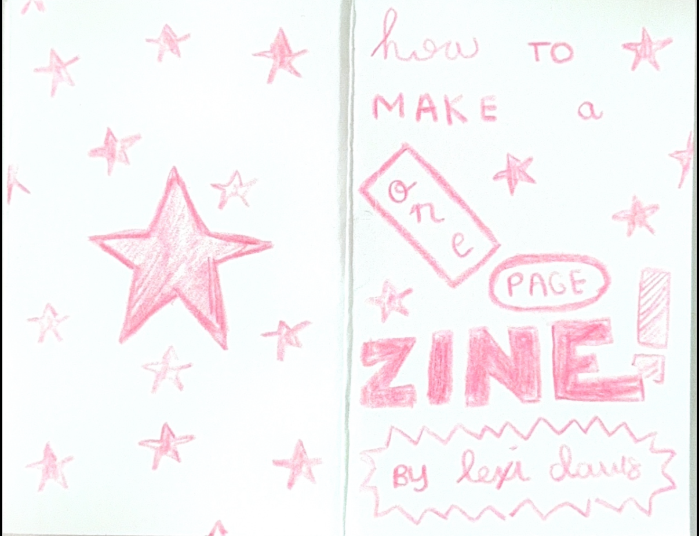

a zine, short for magazine, is a DIY magazine that can be used for artistic, political, and social expression. zines are easily accessible, many being free or a few dollars, and they are spread throughout friends and communities. they can be personal or non-personal, and they can be about any topic you want! there are many different genres of zines, for example, fanzines, which focus on fandom culture. your zine can be anything you want it to be!!!
making a one-page zine is a great introduction to zine-making. it's requires no special tools besides one sheet of 8.5x11 paper, a pair of scissors, and some markers or pens! this is a great way to easily create a zine without printing!